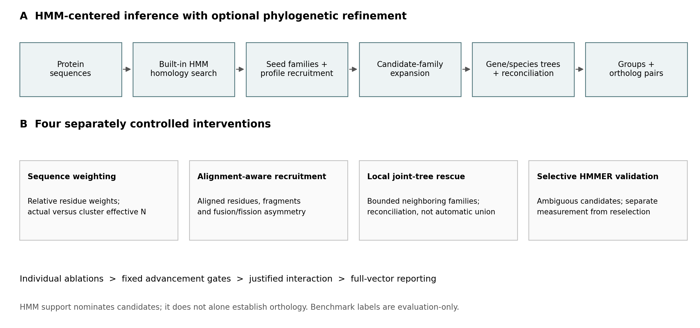
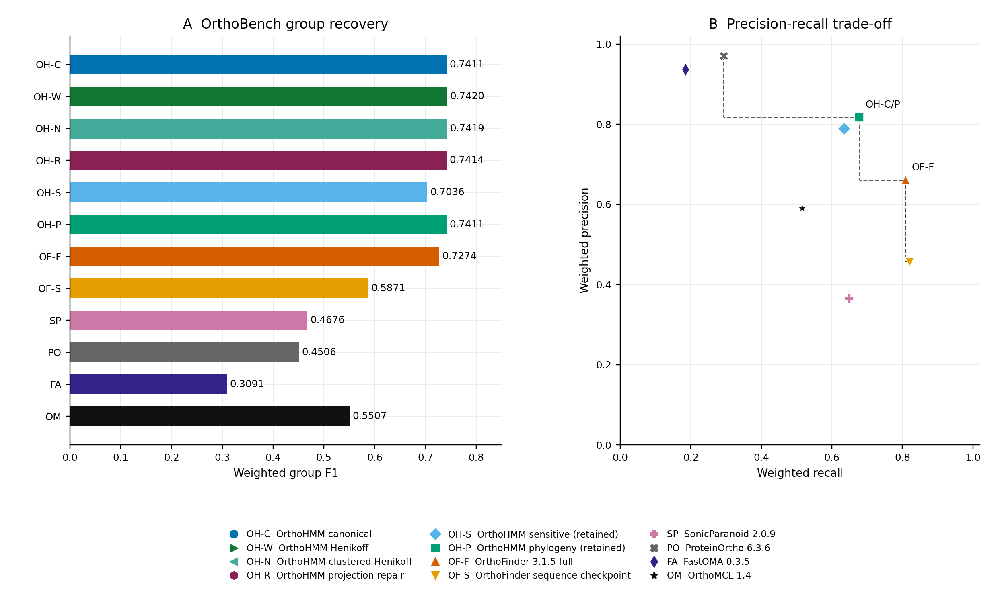
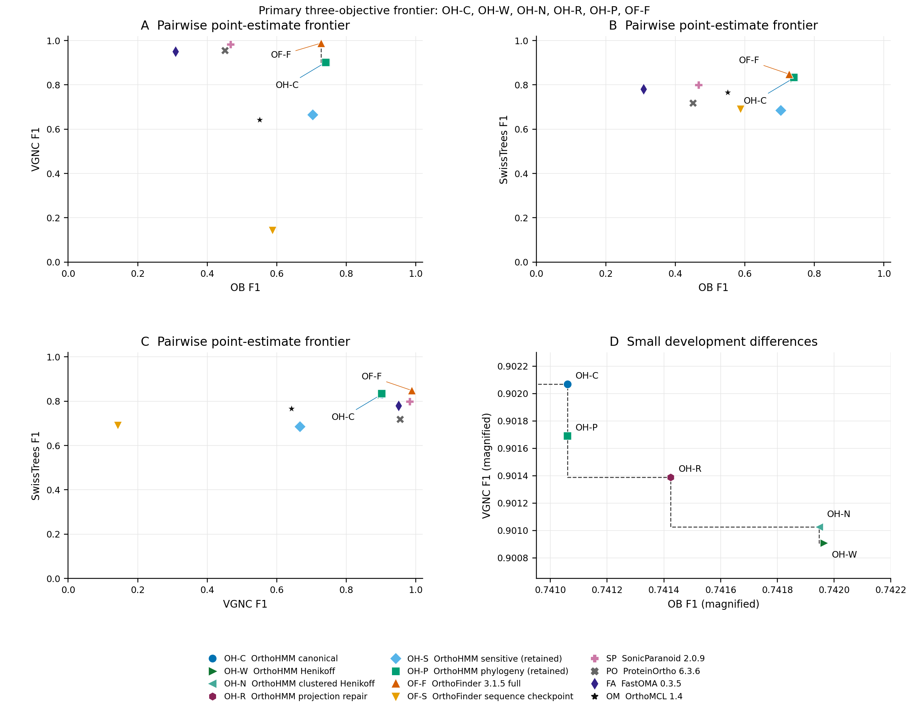
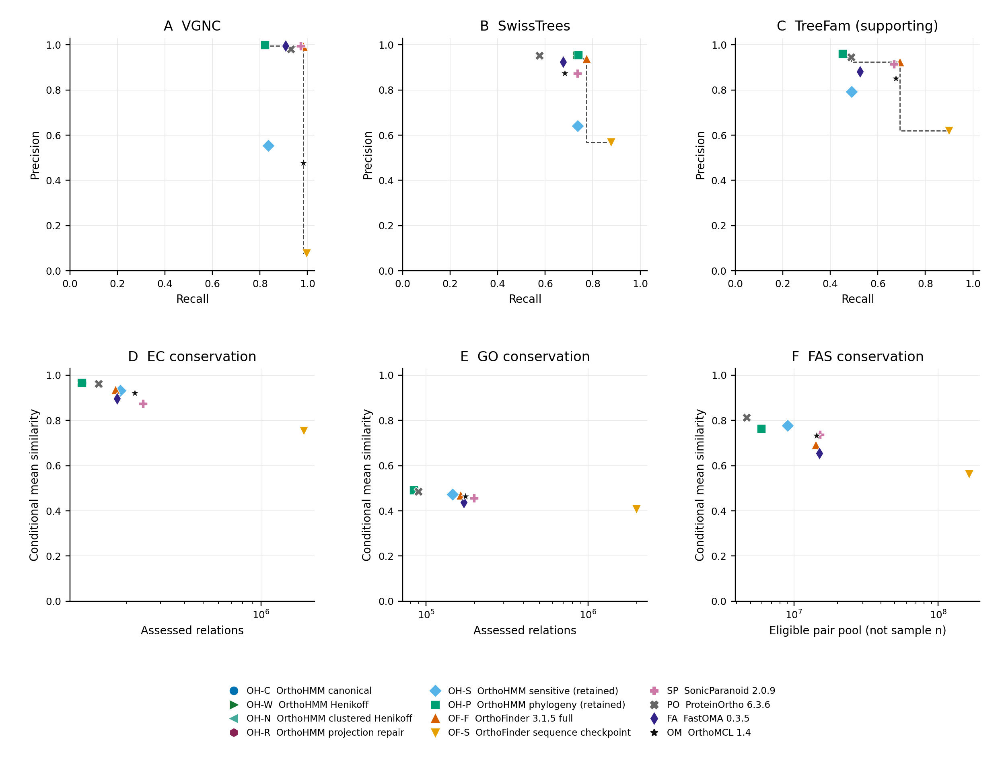
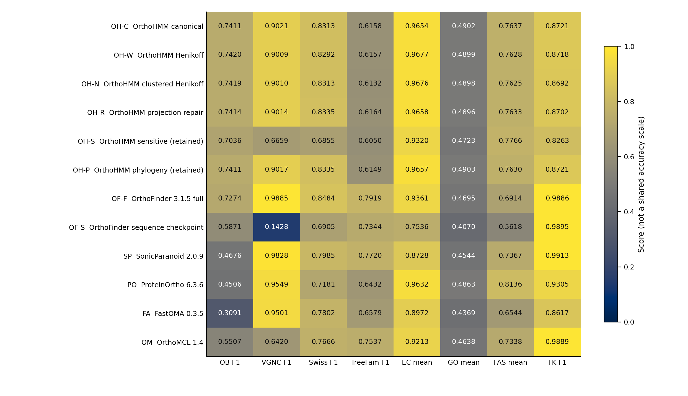
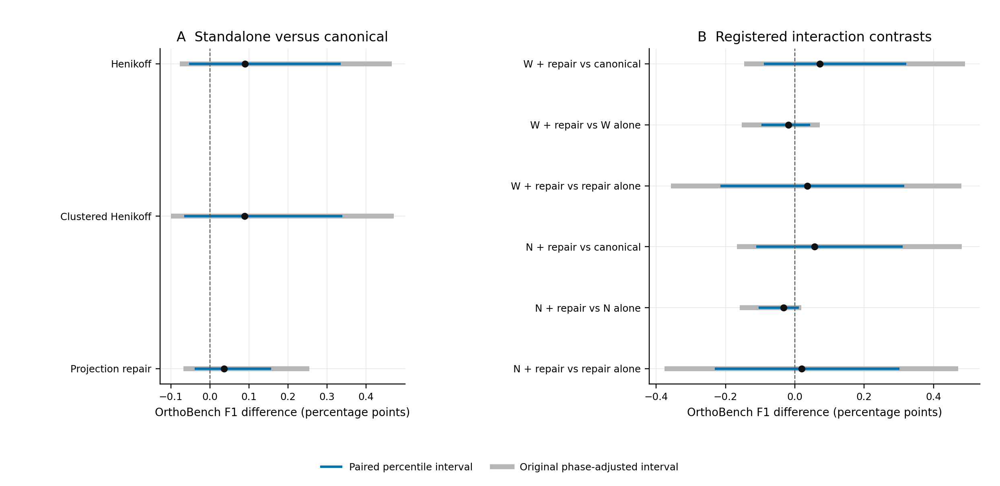

Orthology inference balances recovery of divergent homologs against separation of paralogs, and different benchmarks emphasize different aspects of this trade-off. We evaluated OrthoHMM, an HMM-centered inference workflow with phylogenetic refinement, against six comparator configurations using OrthoBench, Quest for Orthologs (QfO), and a supplementary Three Kingdoms marker reference. We also tested sequence-weighted family profiles, alignment-aware recruitment, local joint-tree rescue, and selective HMMER validation. Canonical OrthoHMM achieved OrthoBench F1 of 0.741061, compared with 0.727365 for full OrthoFinder 3.1.5, through higher precision but lower recall. OrthoFinder had higher VGNC, SwissTrees, and TreeFam-A F1. Among 12 complete-vector configurations, five OrthoHMM configurations and full OrthoFinder were nondominated on the three primary F1 objectives. This descriptive frontier did not imply statistical superiority: small standalone OrthoHMM improvements had paired uncertainty intervals spanning zero, and both tested combinations failed to improve on their weighting-only constituents. These results locate OrthoHMM on a benchmark-dependent accuracy frontier while supporting unchanged defaults rather than a universal accuracy or efficiency advantage.
Orthologs descend from speciation events, whereas paralogs descend from gene duplication. Similarity is therefore evidence for homology, not sufficient evidence for orthology. OrthoFinder integrates sequence comparison with phylogenetic inference (David M. Emms and Kelly 2019; David M. Emms et al. 2026a, 2026b), while profile HMMs offer a complementary way to represent family-level sequence conservation (Eddy 2011). The OrthoHMM preprint introduced an HMM-based orthogroup inference framework (Steenwyk et al. 2024); the present development study evaluates its extended implementation and controlled alternatives.
Rather than compress heterogeneous benchmarks into one score, we ask where OrthoHMM lies among the observed trade-offs. A configuration is Pareto dominated when another is at least as good on every specified objective and strictly better on at least one. This definition makes both the chosen objectives and the comparison set consequential. We use curated group recovery and two primary QfO reference-pair tests as the main objectives, retaining functional conservation and more limited reference panels as separate evidence.
The workflow combines sequence-supported homology search, family-profile recruitment, candidate-family expansion, and phylogenetic inference (Fig. 1). Four interventions were evaluated separately before a justified interaction: position-based sequence weighting, aligned-residue recruitment evidence, bounded local joint-tree rescue, and HMMER remeasurement of ambiguous candidates. The controls separate profile construction, candidate generation, score measurement, and decision-rule changes. An HMM match alone never establishes orthology.
Canonical OrthoHMM achieved weighted group F1 of 0.741061, precision 0.817705, and recall 0.677553. Full OrthoFinder 3.1.5 achieved F1 of 0.727365, precision 0.660651, and recall 0.809066 (Fig. 2). Thus, the higher OrthoHMM F1 reflects a precision-recall trade-off rather than uniform superiority. Henikoff weighting reached the highest observed OrthoBench F1, 0.741965, but its improvement over canonical was only 0.090379 percentage points. Clustered Henikoff weighting and projection repair achieved 0.741947 and 0.741424, respectively. These are experimental configurations, not newly recommended defaults.
On the three primary objectives, OrthoBench, VGNC, and SwissTrees F1, six of 12 configurations were nondominated: canonical OrthoHMM, both retained weighting variants, projection repair, retained phylogenetic OrthoHMM, and full OrthoFinder (Fig. 3; Supplementary Table S2). Five points represent OrthoHMM configurations, not five independent tools. Their frontier membership arises from different compromises among benchmarks; it does not establish a single best configuration.
The pairwise projections clarify this distinction. Full OrthoFinder was the only nondominated configuration when VGNC and SwissTrees F1 were considered together, exceeding every evaluated OrthoHMM configuration on both. Adding OrthoBench introduces a competing objective and places OrthoHMM configurations on the frontier. When supporting TreeFam-A and supplementary Three Kingdoms F1 were added, nine configurations became nondominated, including the sequence-only OrthoFinder checkpoint, SonicParanoid, and OrthoMCL. Frontier membership is therefore sensitive to objective choice and cannot substitute for biological interpretation or independent validation.
The retained matched-resource panel reviewed 27 sequential attempts on nested 4-, 8-, and 12-proteome datasets. Twenty-five attempts produced measurements; 24 were eligible under the original review rules, and six of nine method/size cells contained all three eligible repeats (Fig. 4). At eight proteomes, median native elapsed times were 20.6 minutes for retained high-sensitivity OrthoHMM, 33.3 minutes for retained phylogenetic OrthoHMM, and 19.0 minutes for full OrthoFinder. These are shared-host observations with unknown, potentially method-dependent contention. They do not establish isolated speedups, asymptotic scaling, or costs of the new weighted configurations. We therefore do not construct an accuracy-runtime frontier from mismatched configurations or cached incremental campaign costs.
Full OrthoFinder had higher VGNC, SwissTrees, and TreeFam-A F1 than canonical OrthoHMM: 0.988546 versus 0.902068, 0.848413 versus 0.831348, and 0.791918 versus 0.615778, respectively (Fig. 5; Supplementary Fig. S1). Canonical OrthoHMM had higher EC, GO, and FAS conditional means: 0.965382, 0.490236, and 0.763725, compared with 0.936130, 0.469548, and 0.691422 for full OrthoFinder. These means summarize different assessed pair populations, not matched-population accuracy effects. FAS eligibility counts are not its numerical sample sizes. The supplementary Three Kingdoms result also favored full OrthoFinder, 0.988582 versus 0.872133, but evaluates a restricted marker reference rather than genome-wide orthology truth.
The unadjusted paired OrthoBench F1 intervals for Henikoff, clustered Henikoff, and projection repair included zero: [-0.050123, 0.331771], [-0.062645, 0.335866], and [-0.036216, 0.154189] percentage points (Supplementary Fig. S2). Full-vector effects were mixed. Species-normalized weighting and the strict alignment guard failed their original advancement gates. Local rescue left all 70 reference-family scores unchanged. Both builtin and HMMER anchor reselection exceeded the allowed recall loss; HMMER measurement without reselection matched projection repair alone.
A registered six-arm weighting/projection experiment reproduced all four constituent controls. Both combinations exceeded canonical F1 but fell below their corresponding weighting-only controls: 0.741784 versus 0.741965 and 0.741628 versus 0.741947. Neither advanced to QfO or Three Kingdoms. Failed executions and unrun endpoints remain explicit in Supplementary Table S1 and are not treated as negative biological results or zero scores.
OrthoHMM occupies a useful part of the observed group-recovery trade-off, but its position changes with the benchmark. Higher OrthoBench precision and F1 coexist with lower recall, while full OrthoFinder leads on the principal QfO reference-pair F1 endpoints. Higher functional similarity among a smaller or differently selected prediction set does not overturn that comparison.
The bounded experiments identify limitations as well as possibilities. Sequence weighting slightly changes recruitment, but the observed gains do not transfer uniformly. More restrictive alignment evidence can remove true relationships, and more sensitive scoring does not ensure that anchor reselection improves orthology. The failed combinations show that individually promising changes need not be additive. Accordingly, production defaults remain unchanged and the three standalone candidates remain experimental.
All primary panels were exposed during development. The frontier is a descriptive reanalysis of those results, not independent confirmation or a statistical test of superiority. Reference families can share evolutionary history, and predicted groups can join families; bootstrap exchangeability is therefore an approximation. TreeFam is supporting evidence, Three Kingdoms is marker-limited, and functional annotations and FAS sampling impose further population-selection limitations. No suitable strictly independent panel was admitted after the candidate freeze. These limitations narrow the conclusions without invalidating the controlled negative results.
Initial built-in search uses local maximum-path match/insert/delete scoring with BLOSUM62 emissions and fixed transition costs. Its approximate significance filter is not a demonstrated HMMER-calibrated E-value. Family profiles learn match emissions from alignments while retaining uniform transition costs; they are not equivalent to HMMER Plan7 profiles. Recruitment requires member-score thresholds and sequence-supported anchors. Phylogenetic refinement expands candidate families, infers alignments and trees, and applies the recorded orthology/paralogy rules. The code and per-run bindings, including parameter values and external commands, are retained in the completed campaign archive; historical runs retain their own revisions. Canonical denotes the experimental matched collection, not the shipping default or the retained phylogeny result collection. New full-proteome experiments used sequential 16-CPU/128-GiB allocations; the separate historical resource panel used the 32-CPU allocations described below.
Henikoff-style weights use per-column contributions of 1/(r*n), where r is the number of observed residue types and n is the count of the sequence’s residue type (Henikoff and Henikoff 1994). Contributions are averaged over nonmissing positions and normalized to the actual sequence count or an effective cluster count. Clusters use single linkage at 62% aligned identity normalized by the shorter nonmissing length. Alignment-aware experiments distinguish aligned residues from bounding spans. Local rescue examines bounded neighboring families with explicit reconciliation and duplication constraints. Selective HMMER 3.4 validation separates measurement from anchor reselection (Eddy 2011). Original protocols fix advancement and stopping criteria; benchmark labels and GO/EC/FAS annotations are not runtime inputs.
Comparators are full and sequence-only OrthoFinder 3.1.5, SonicParanoid 2.0.9 (Cosentino, Sriswasdi, and Iwasaki 2024), ProteinOrtho 6.3.6 (Klemm, Stadler, and Lechner 2023), FastOMA 0.3.5 (Majidian et al. 2025), and OrthoMCL 1.4 (Li, Stoeckert, and Roos 2003). FastOMA used a supplied OrthoFinder species tree. The sequence-only OrthoFinder output is a clustering checkpoint, not a finalized alternative phylogenetic workflow. QfO submissions retain native pairs or group-derived cross-species pairs as recorded; these output semantics are not interchangeable. Competitor rows are retained evidence, not fresh reruns during the final improvement campaign. Some historical comparator rows lack complete transitive executable or input-consumption provenance; current fingerprints do not reconstruct missing run receipts.
OrthoBench comprises 12 proteomes, 251378 proteins, and 70 curated reference groups (David M. Emms and Kelly 2020). We retain its recorded weighted group-recovery precision, recall, and F1. The corrected QfO panel comprises 78 proteomes and 984137 proteins, with versioned references and identifier mappings (Quest for Orthologs consortium et al. 2016; Altenhoff et al. 2020). VGNC, SwissTrees, and TreeFam-A supply reference-pair F1; EC and GO are conditional Schlicker similarity means, and FAS is reported separately. Their arithmetic mean is not an accuracy endpoint. Three Kingdoms contains 443217 proteins from 12 proteomes; its reference comprises 2035 genes in 255 BUSCO-derived families (Manni et al. 2021). Its group co-membership scorer includes within-species pairs and does not evaluate false positives involving nonreference genes. Native ownership, benchmark coverage, assessed relations, and numerical sample counts remain distinct in the source tables.
The main comparison set contains all 12 distinct configurations with complete eight-endpoint vectors. Only documented repeated canonical controls are collapsed for plotting; all 29 original rows remain available. For objective set J, configuration a dominates b if a_j >= b_j for every j in J and a_j > b_j for at least one j. All objectives in the accuracy frontiers are maximized. Computation uses unrounded values; exact ties do not dominate one another. Three-dimensional membership and two-dimensional projections are computed separately. Dashed plot segments mark the boundary between observed points, not achievable interpolated configurations.
The primary objectives are OrthoBench, VGNC, and SwissTrees F1. The five-F1 sensitivity analysis adds TreeFam-A and Three Kingdoms. EC/GO/FAS means and resource measurements are excluded. This reporting analysis was defined after the benchmark results were known; it makes no preregistration claim. We reuse the original 100000 paired reference-family resamples and phase-specific Bonferroni adjustments without new resampling. These are not campaign-wide selection corrections. Frontier membership has no inferred confidence level; dependent gene pairs are not treated as independent replicates.
The resource panel allocates 32 native CPUs and 128 GiB per run on the local Threadripper PRO 7995WX. It retains three planned repeats per method/size combination and all exclusions, including two pre-native aborts. Median/range summaries require three eligible repeats. Wall time covers the native command; CPU measures its task-subtree bracket including wrapper work; peak memory covers the native step including its launcher, not algorithm-only process RSS. Preparation, conversion, and scoring are outside the native timer. Taxon composition changes with dataset size, and contention is neither removed nor quantified as a correction. These historical configurations are not assigned the accuracy or costs of the new weighted experiments.
OrthoHMM is available at https://github.com/JLSteenwyk/orthohmm. The companion package includes the manuscript, original vector figures, full-precision score table, plotted coordinates, exact frontier membership and dominators, all timing attempts, references, executable plotting code, and SHA256 manifests. Figures can be regenerated from the included snapshot without raw proteomes. The campaign archive additionally records large-artifact locations, versions, commands, seeds, failed-run history, and source/native/score checks. The package is a manuscript draft, not a public archival deposition; no deposition DOI or submission approval is asserted.
Author order, affiliations, contributions, funding, and competing-interest statements require author confirmation before submission. No new experimental organisms or participant data were generated for this reporting analysis.

A, Sequence-supported search and family-profile recruitment precede candidate expansion and phylogenetic refinement. This conceptual diagram distinguishes the optional phylogenetic workflow from sequence-only outputs. B, The four separately controlled interventions target profile construction, alignment evidence, local tree analysis, and ambiguous-candidate scoring. Individual ablations precede the registered interaction. The figure describes the evaluated architecture; it does not imply that all interventions improved accuracy or are enabled by default.

A, Weighted group F1 for all 12 complete-vector configurations. Bars start at zero. B, Their corresponding weighted precision and recall. Dashed segments mark the observed point-estimate frontier. The canonical OrthoHMM configuration has higher precision but lower recall than full OrthoFinder. Symbols retain the same meanings across figures. Small development differences are not independent accuracy gains; paired contrasts appear in Supplementary Fig. S2. Some points coincide; OH-C/P labels the identical canonical and retained-phylogeny OrthoBench coordinates. OB, OrthoBench; OH, OrthoHMM; OF, OrthoFinder; SP, SonicParanoid; PO, ProteinOrtho; FA, FastOMA; OM, OrthoMCL. OH-C/W/N/R denote canonical, Henikoff, clustered Henikoff, and projection repair; OH-S/P denote retained sensitive/phylogenetic configurations. OF-S is a sequence-only checkpoint.

A-C, Pairwise projections of the primary objectives. All axes maximize F1; the top right is favorable. Dashed steps mark boundaries among observed nondominated points, not attainable interpolations. Full OrthoFinder is the sole nondominated configuration in the VGNC-SwissTrees projection. D, Magnification of the small differences among OrthoHMM development configurations; its truncated axes do not depict uncertainty. Primary three-objective membership is calculated independently of these projections and exported in Supplementary Table S2. Membership is descriptive and depends on the comparison set, objectives, and point estimates.

A-C, VGNC, SwissTrees, and supporting TreeFam-A precision versus recall, with observed point-estimate frontiers. These frontiers are not the F1-F1 frontier in Fig. 3. D-F, EC, GO, and FAS conditional mean similarity versus recorded assessed or eligible pair populations, on logarithmic population axes. Higher means among differently selected pairs do not establish greater orthology accuracy. The FAS eligible pool is not its numerical sample size. No accuracy frontier is assigned to functional panels. Points have no invented independent-pair uncertainty; heterogeneous native error conventions are not pooled. Published OrthoFinder figures guide the types of panels, not their numerical inputs; unrun species-tree discordance tests are absent. Some configurations have coincident or visually overlapping coordinates; the exported coordinate table preserves their distinct identities and values.

All 12 complete-vector configurations, shown on a common numerical 0-1 range for compact display. Colors are not a shared biological accuracy scale, and columns are not averaged or ranked together. EC, GO, and FAS are conditional means. TreeFam is supporting evidence; Three Kingdoms is marker-limited supplementary evidence. Supplementary Table S1 retains all 29 original configuration/control/history rows, including explicit NA endpoints.

A, The three standalone candidates relative to canonical. B, The six registered interaction contrasts. Points are F1 differences in percentage points. Blue intervals are paired percentile intervals; gray intervals retain the original phase-specific Bonferroni tail adjustments (nine weighting, 24 projection-recovery, and 18 interaction endpoints). All reuse the saved 100000 paired reference-family resamples. These are development-exposed, phase-qualified intervals, not campaign-wide selection corrections or confidence sets for Pareto membership. Zero-spanning intervals do not establish equivalence. W and N denote Henikoff and clustered Henikoff.